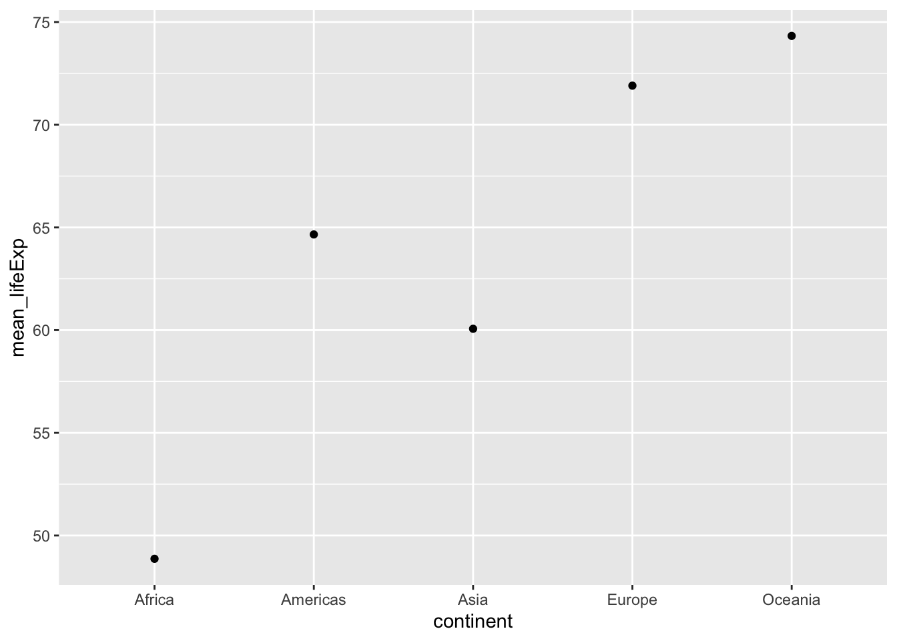

2 Lab 2 Descriptives
“9/2/2020 | Last Compiled: 2020-12-04”
2.1 Reading
Vokey & Allen, Chapters 2 & 3 on descriptive statistics, including measures of central tendency (e.g., means) and dispersion (variances).
2.2 Overview
General note, I am trying to find a consistent way to structure the lab content. In this lab I adopt a structure that splits the lab between conceptual and practical parts. In conceptual sections we will use R to demonstrate and reinforce concepts about statistics. In practical sections we will use R for data analysis.
- Conceptual Section I: Using R to demonstrate properties of the mean
- Practical Sections I and II:
- importing data
- calculating means or other descriptive statistics
- graphing means with ggplot2
2.3 Means Demo
This a quick piece of example code showing some steps to calculate and graph means from a data set in R using the tidyverse. You will need to install the tidyverse libraries on your system before you can run the code below:
install.packages("tidyverse")##
## Attaching package: 'dplyr'## The following objects are masked from 'package:stats':
##
## filter, lag## The following objects are masked from 'package:base':
##
## intersect, setdiff, setequal, union
library(ggplot2)
# chickwts is a built in data set
# with chick weights by feed
# calculate means for each feed type
means_df <- chickwts %>%
group_by(feed) %>%
summarize(means = mean(weight))## `summarise()` ungrouping output (override with `.groups` argument)
# print table of means
knitr::kable(means_df)| feed | means |
|---|---|
| casein | 323.5833 |
| horsebean | 160.2000 |
| linseed | 218.7500 |
| meatmeal | 276.9091 |
| soybean | 246.4286 |
| sunflower | 328.9167 |
2.3.1 Base R descriptive statistics functions
Base R comes with functions for many common descriptive statistics. In general, these functions take a vector of number as an input, and return the statistic as an output. Here are some examples computing statistics on the sequence of integers from 1 to 10.
a <- 1:10
mean(a) # arithmetic mean## [1] 5.5
median(a) # median## [1] 5.5
sd(a) # sample standard deviation (n-1)## [1] 3.02765
var(a) # sample variance (n-1)## [1] 9.166667At the same time, base R does not have existing functions for every descriptive statistic, or custom descriptive statistics that you might want to make yourself. For example, there is no mode function. You would have to find another package with a mode function, or write your own.
2.4 Concepts I: Demonstrating properties of the arithmetic mean in R
In this section we will:
- use the built in
mean()function - write our own mean function
- conduct a simulation in R to demonstrate that the mean is the only number that causes the sum of the deviations from the mean to equal zero.
We can use the mean() function to calculate arithmetic means in R. These examples show calculating means of different vectors inputted to the mean function.
mean(1:10)## [1] 5.5## [1] 2
mean(chickwts$weight)## [1] 261.3099In order to calculate means we need a set of numbers to start with. In a research context, the sets of numbers will be data points from a research project. And, we will learn throughout this course how to input real data, manipulate it, and calculate descriptive and inferential statistics. However, in this section, we will use R to create sets of numbers, rather than input data.
2.4.1 Arithmetic Mean
The mean is the sum of the numbers, divided by the number of numbers:
\(\bar{X} = \frac{\sum_i^n{Xi}}{n}\)
If we wanted to break these steps down in R to compute the mean for the sequence 1 to 10, it could look like this:
a <- 1:10 # create a vector
sum_a <- sum(a) # store the sum
length_a <- length(a) # store the length (n)
mean_a <- sum(a)/length(a) # store the sum/n
mean_a # report the mean## [1] 5.52.4.2 Writing a custom mean function
How would you write your own custom version of the mean function? Here are a few examples:
# A long-form mean function that shows each step
my_mean <- function(x) {
sum_x <- sum(x) # store the sum
length_x <- length(x) # store the length (n)
mean_x <- sum_x/length_x # divide and store mean
return(mean_x) # output the mean
}
my_mean(1:10)## [1] 5.5The above example is “long” because it writes out each step of computing the mean on each line. Sometimes it is desirable to make the steps in your function clear and easy to follow. It is also possible and sometimes desirable to rewrite the function so it accomplishes the same steps in a short number of lines of code. Below I show an example of systematically rewriting the above function to make it take fewer lines of code. We will see that the return() statement is not necessary, and that the {} are not necessary if the function can be written on one line.
# return() is not necessary if the function ends with a
# variable name being printed
my_mean <- function(x) {
sum_x <- sum(x) # store the sum
length_x <- length(x) # store the length (n)
mean_x <- sum_x/length_x # compute and store mean
mean_x # output the mean
}
my_mean(1:10)## [1] 5.5
# end with the mean computation
my_mean <- function(x) {
sum_x <- sum(x) # store the sum
length_x <- length(x) # store the length (n)
sum_x/length_x # compute and output the mean
}
my_mean(1:10)## [1] 5.5
# no intermediate saving of sum or length
my_mean <- function(x) {
sum(x)/length(x) # compute and output the mean
}
my_mean(1:10)## [1] 5.5## [1] 5.52.4.3 Demonstrate that the mean is the point from which the sum of the deviations is 0.
We learned that the mean of a set of numbers is the point where the sum of the deviations equal 0. Our problem is to use R to demonstrate this property of the mean. How can we do that?
Let’s break down the steps. We need some numbers:
scores <- c(1,64,5,4,3,4,5,6,7,8,3)We need to be able to compute the sum of the deviations. That is we wish to compute the differences between one number (which is going to be the mean), and all of the numbers in our set. These are the deviations. Then we want to add them all up to arrive at the sum of the deviations.
How can we find the deviations between the numbers in scores, and some number of our choice? Let’s pick the number 5. It turns out that we can simply subtract 5 from scores. And we will produce a vector of differences or deviations
scores-5## [1] -4 59 0 -1 -2 -1 0 1 2 3 -2Then, we can find the sum:
sum(scores-5)## [1] 55Notice that the sum of the deviations (between the numbers in scores and 5) does not equal 0. So, Clearly, the mean of our numbers must not be 5. The mean is the value that would cause the deviations to sum to 0.
2.4.4 Simulations to approximate the mean
We could very quickly show that the mean of scores causes the deviations to sum to 0. For example, the mean is 10, and the sum of the deviations between the scores and the mean is 0.
scores # the scores## [1] 1 64 5 4 3 4 5 6 7 8 3
mean(scores) # the mean## [1] 10
scores-mean(scores) #the vector of deviations from the mean## [1] -9 54 -5 -6 -7 -6 -5 -4 -3 -2 -7## [1] 0Instead, let’s use R to approximate the value of the mean by trying out different values, rather than by computing the mean first. For example, we previously tried a 5, and the sum of the deviations was not 0. What if we tried a bunch of numbers, say from the lowest number (1) to the highest number (64)? Each time we could compute the deviations, and the sum of the deviations. We could record the outcome for each test. Then we could look at our results and see which of the numbers comes closest to creating a sum of deviations that equals 0. This will require 64 individual tests, and that is too much do to by hand. Fortunately, we can use R to accomplish these goals very quickly.
Basically, this is this the process of what I want to do…but I don’t want to write 64 lines of code either…
sum(scores-1)## [1] 99
sum(scores-2)## [1] 88
sum(scores-3)## [1] 77
sum(scores-4)## [1] 66
sum(scores-5)## [1] 55
sum(scores-6)## [1] 44
## and so on to 64If we want to repeatedly apply a similar computation in R, remember we can use a for loop. We will test all of the integers between the smallest value and largest value. So, we first create a sequence of those numbers called numbers_to_test. And, then we use a loop to compute the sum of deviations between the scores and each of the test numbers.
min(scores) ## [1] 1
max(scores)## [1] 64
numbers_to_test <- min(scores):max(scores)
sum_deviations <-c() # create an empty vector to store sums
for(i in numbers_to_test) {
sum_deviations[i] <- sum(scores-i)
}
sum_deviations## [1] 99 88 77 66 55 44 33 22 11 0 -11 -22 -33 -44 -55
## [16] -66 -77 -88 -99 -110 -121 -132 -143 -154 -165 -176 -187 -198 -209 -220
## [31] -231 -242 -253 -264 -275 -286 -297 -308 -319 -330 -341 -352 -363 -374 -385
## [46] -396 -407 -418 -429 -440 -451 -462 -473 -484 -495 -506 -517 -528 -539 -550
## [61] -561 -572 -583 -594We just computed our first simulation and produced these 64 sums of deviations, displayed above. Our question was to approximate the mean, by finding a value that produces a sum of deviations closest to 0. A final step is to evaluate the results of our simulation to answer the question.
Let’s discuss three ways to get at the answer. First, we could look at the above sums and see that the 10th value is a 0, this means that the number 10 produced the sum of deviations closest to 0 (equaling 0 because 10 is the mean).
2.4.5 Plotting the results
Second, we could visualize the sum of the deviations. We could quickly do that with the plot() function.
plot(sum_deviations)We are looking for the value on the x-axis that causes the sum of the deviations on the y-axis to be closest to 0. One way to help locate this value could be to look at the absolute values. Absolute values remove the negative (-) sign from numbers, leaving everything positive. You can convert to absolute values in R using abs()
Now, it is easy to see that 10 produces the sum of deviations closest to 0 (in this case it produces a value of 0, because 10 is also the mean).
2.4.6 Locating the result using which()
Finally, we could use other R functions to help us compute the answer. For example, we could use the which() function. This function can be used to determine the indices or position of “logically” obtained values in a vector. Is a long way of saying we want R to tell us which position in the vector contains the 0
#find the positions in vector that equal 0
which(sum_deviations == 0)## [1] 10
#show the value in position 10
sum_deviations[10]## [1] 0
#all in one
sum_deviations[ which(sum_deviations == 0) ]## [1] 02.4.7 Minor details
The above approach worked pretty well. By a simulation process, we found that 10 produced a sum of deviations that equaled 0. None of the other numbers produced a sum of deviations that equaled 0. However, our example code won’t work very well for other sets of numbers.
For example, if we used the set of number from 1 to 20, where the mean is 10.5, we find that none of the sums of deviations ever get to 0 (that’s because we are only testing integers between 1 and 20). And, our which() function will never find a number that is exactly equal to 0.
scores <- 1:20
numbers_to_test <- min(scores):max(scores)
sum_deviations <-c() # create an empty vector to store sums
for(i in numbers_to_test) {
sum_deviations[i] <- sum(scores-i)
}
sum_deviations## [1] 190 170 150 130 110 90 70 50 30 10 -10 -30 -50 -70 -90
## [16] -110 -130 -150 -170 -190
which(sum_deviations == 0)## integer(0)Here, we need to modify the comparison in the which() function to return “approximate” numbers that give the sums of deviations closest to zero.
## [1] 10 112.4.8 Advanced Example: Writing a function for our demonstration
In this example I show how the above simulation could be written as a function. This function could then be used to approximate a mean for any set of scores, and test values.
approximate_mean <- function(scores,test_sequence){
sum_deviations <- c()
for(i in 1:length(test_sequence)){
sum_deviations[i] <- sum(scores-test_sequence[i])
}
locate_index <- which(abs(sum_deviations) == min(abs(sum_deviations)))
test_sequence[locate_index]
}
a <- c(1,4,3,2,4,3,5,4,6,5,7,6,8,7,9,8,7,6,7,6,5)
b <- seq(0,10,.1)
approximate_mean(a,b)## [1] 5.4
#actual mean
mean(a)## [1] 5.3809522.5 Practical I: Inputting real data and calculating descriptive statistics with tidyverse
These practical examples will gloss over many important details that we will cover throughout the semester, but the example code is enough to get you started. We will be following a tidyverse approach, which minimally involves
1. Importing data into a data.frame or similar (tibble, data.table)
2. “Wrangling” the data into a desired format for analysis
3. Applying calculations to the data
2.5.1 Importing Data
First, we need to have some “real data” to import. Download this zip file. It contains a folder open_data, which several data files taken from published psychology papers (whose authors made their data publicly available).
In order to follow along with this example, unzip the file, then copy or move the open_data folder into your R project folder. The open_data folder should be in the same R project folder as the .Rmd document you are using for this lab.
We will use the gapminder data set, which includes measures on life expectancy, population, and gdp per capita, as a function of year, country, and continent. First, we load the gapminder.csv file (csv stands for comma separated value) using the read.table() function.
gapminder_data <- read.table("open_data/gapminder.csv",
sep = ",",
header = TRUE )There are many more ways to accomplish the same goal of importing data into R. We will discuss other options throughout the course.
2.5.2 Calculating means
What is mean of each of the measures?
mean(gapminder_data$lifeExp)## [1] 59.47444
mean(gapminder_data$pop)## [1] 29601212
mean(gapminder_data$gdpPercap)## [1] 7215.3272.5.3 dplyr (group_by then summarize)
How can we calculate means separately as a function of the factors year, country, or continent?
We will use the dplyr library (part of the tidyverse), and do three things:
- group the data by the levels of a factor (in this case, separate the data by different continents, using the
continentvariable) - summarize the data using a mean function
- output a table of results
library(dplyr)
group_means <- gapminder_data %>%
group_by(continent) %>%
summarize(mean_lifeExp = mean(lifeExp))## `summarise()` ungrouping output (override with `.groups` argument)
knitr::kable(group_means)| continent | mean_lifeExp |
|---|---|
| Africa | 48.86533 |
| Americas | 64.65874 |
| Asia | 60.06490 |
| Europe | 71.90369 |
| Oceania | 74.32621 |
Change the name of the variable inside group_by() to change which factor you want to evaluate (e.g., enter year, or country). You can include multiple factors:
group_means <- gapminder_data %>%
group_by(continent,country) %>%
summarize(mean_lifeExp = mean(lifeExp))## `summarise()` regrouping output by 'continent' (override with `.groups` argument)| continent | country | mean_lifeExp |
|---|---|---|
| Africa | Algeria | 59.03017 |
| Africa | Angola | 37.88350 |
| Africa | Benin | 48.77992 |
| Africa | Botswana | 54.59750 |
| Africa | Burkina Faso | 44.69400 |
| Africa | Burundi | 44.81733 |
Note, group_means now contains a very large data frame, I used the head() function when printing the table, which only prints the first five rows of the table, this is useful for previewing large tables.
2.5.4 More dplyr examples
It is possible to add multiple functions inside summarize. Here we calculate the mean, median, standard deviation, and variance for Life Expectancy as a function of continent.
group_means <- gapminder_data %>%
group_by(continent) %>%
summarize(mean_lifeExp = mean(lifeExp),
median_lifeExp = median(lifeExp),
sd_lifeExp = sd(lifeExp),
var_lifeExp = var(lifeExp))## `summarise()` ungrouping output (override with `.groups` argument)Note, you can even write your own custom functions and use them inside summarize.
2.6 Practical II: Plotting the means with ggplot2
ggplot2 is a powerful library for plotting and graphing in R. There are many details to using ggplot2 and we will learn about them throughout the semester. Today, we will create bar plots and line graphs displaying means and error bars.
2.6.1 Bar graph
## `summarise()` ungrouping output (override with `.groups` argument)Some options for modifying the plot:
ggplot(group_means, aes(x = continent, y = mean_lifeExp))+
geom_bar(stat="identity")+
ylab("Mean Life Expectancy")+
xlab("Continent")+
theme_classic()+
ggtitle("Mean Life Expectancy by Continent")2.6.2 Line graph
ggplot(group_means, aes(x = continent, y = mean_lifeExp))+
geom_point()+
geom_line()## geom_path: Each group consists of only one observation. Do you need to adjust
## the group aesthetic?
Note we get a message about adjusting the group aesthestic, and even though we asked ggplot to draw lines connecting the dots, we get a line graph. This is a good example of unexpected behavior that often requires a quick google. I copied the message the into google and found that setting group=1 produced the lines I was expecting:
ggplot(group_means, aes(x = continent,
y = mean_lifeExp,
group = 1))+
geom_point()+
geom_line()2.6.3 Error bars
It is common to present means in bar graphs or line graphs along with error bars to indicate variability around the mean. To do this with ggplot we need to calculate measures of variability for each condition, and then use those values as error bars. In this example I add a single standard deviation above and below the means as error bars.
group_means <- gapminder_data %>%
group_by(continent) %>%
summarize(mean_lifeExp = mean(lifeExp),
sd_lifeExp = sd(lifeExp))## `summarise()` ungrouping output (override with `.groups` argument)
ggplot(group_means, aes(x = continent, y = mean_lifeExp))+
geom_bar(stat="identity") +
geom_errorbar(aes(ymin = mean_lifeExp - sd_lifeExp,
ymax = mean_lifeExp + sd_lifeExp),
width = .25)
ggplot(group_means, aes(x = continent,
y = mean_lifeExp,
group = 1))+
geom_point() +
geom_line() +
geom_errorbar(aes(ymin = mean_lifeExp - sd_lifeExp,
ymax = mean_lifeExp + sd_lifeExp),
width = .25)2.7 Lab 2 Generalization Assignment
2.7.1 Instructions
In general, labs will present a discussion of problems and issues with example code like above, and then students will be tasked with completing generalization assignments, showing that they can work with the concepts and tools independently.
Your assignment instructions are the following:
- Work inside the R project “StatsLab1” that you made for lab 1.
- Create a new R Markdown document called “Lab2.Rmd”
- Use Lab2.Rmd to show your work attempting to solve the following generalization problems. Commit your work regularly so that it appears on your Github repository.
- For each problem, make a note about how much of the problem you believe you can solve independently without help. For example, if you needed to watch the help video and are unable to solve the problem on your own without copying the answers, then your note would be 0. If you are confident you can complete the problem from scratch completely on your own, your note would be 100. It is OK to have all 0s or 100s anything in between.
- Submit your github repository link for Lab 2 on blackboard.
- There are six problems to solve, each worth 1 point.
2.7.2 Problems
- Use R to demonstrate that the mean minimizes the sum of the squared deviations from the mean. Accomplish the following steps:
- Produce a sample of at least 10 or more different numbers
- Produce a simulation following the example from the concepts section
- Use your simulation to test a range of numbers smaller and larger than the mean to show that the mean minimizes the sum of the squared deviations from the mean.
- Plot your results.
Write a custom R function for any one of the following descriptive statistics: median, mode, standard deviation, variance. Demonstrate that it produces the same value as the base R function given some set of numbers.
Imagine the same instructor taught a morning, afternoon, and evening section of the same course. And, the average scores for each section on a midterm were 85% for the morning, 90% for the afternoon, and 93% for the evening sections. Create a data.frame representing these means for each section. Then, use ggplot2 to plot the means as bar graph. (hint you will need one vector for the class sections, and one vector for the means. Then you can combine them into a data.frame before plotting them)
Imagine there were two instructors, and they each taught different sections in the morning, afternoon and evening. The midterm averages for instructor 1 were 75%, 78%, and 80% in the morning, afternoon, and evening. The midterm averages for instructor 2 were 88%, 76%, and 63% for the morning, afternoon, and evening. Create a data.frame representing the means, the time of day, and the instructors (three columns). Then plot data.frame using ggplot2 as a bar graph.
Import the
WHR2018.csvdata file, containing measure from the World Happiness report from 2018. For the years 2010 to 2015, what was the mean “healthy life expectancy at birth” for each year (find the mean for each year across countries). Show your results in a table and in a graph using ggplot.Repeat the above, except in addition to calculating the mean for each year, also calculate the standard deviation for “healthy life expectancy at birth” for each year. Then, add error bars to your graph using the +1 and -1 standard deviations from the means for each year.
2.7.3 Advanced
This problem is not officially assigned for points. I’m placing it here for your consideration.
The mean minimizes the sum of the squared deviations. The median minimizes the sum of the absolute deviations. Demonstrate these properties by simulation in R.
Create a set of numbers where the mean and median are different. Then show a plot of values around the mean and the median showing that the mean minimizes the sum of the squared deviations. Finally, create a plot of values around the mean and the median showing that the median minimizes the sum of the absolute deviations.